Picknick in het bos/Het woud der verwachting
A work in progress van 8 mei-7 juni 2015
WILLEM2FABRIEK, BOSCHVELDWEG 471, 'S-HERTOGENBOSCH
INSTALLATIE/FILM/WORKSHOPS /PICKNICKS/PERFOMANCES
De tentoonstellingsruimte van de Willem2fabriek transformeerde tot een woud waarin gedurende de tentoonstellingsperiode picknicks en workshops plaats vonden waarin publiek kon participeren. Vier besloten themapicknicks voor genodigden werden van bovenaf gefilmd en geprojecteerd als onderdeel van de installatie.
Klik hier voor de film van de openings performance.
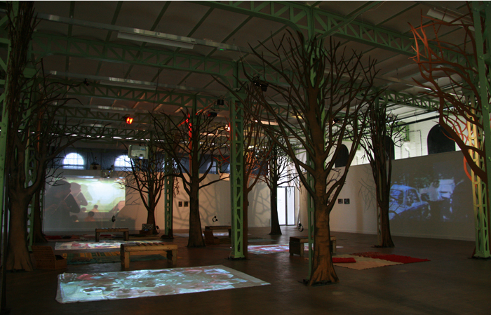 
Onderstaand foto's door Marc Bolsius van de openingsperformance met schermers van Schermclub Den Bosch en dwarsfluitiste Evelien Clement. KLik voor meer foto's hier.
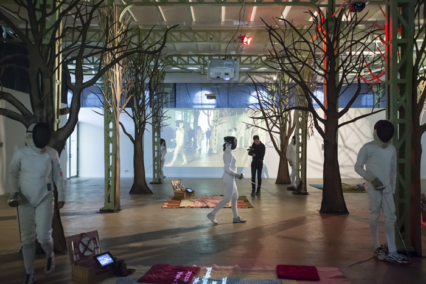 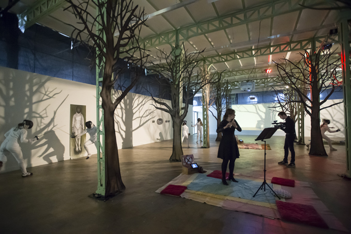
Voor de 'making of' kijk hier in het blog
Hieronder kan je de themapicknick 'Het blote bos' bekijken; een picknick met 10 naakte mensen. Waarom werd men naturist, hoe kijkt de omgeving daarnaar? Wat is het verschil tussen nudisme en naturisme? Is naakt zijn nog steeds (of wederom) een taboe, en verpreutst de samenleving? Deel 1 duurt 15 minuten. Met medewerking van Peter van de Zanden.
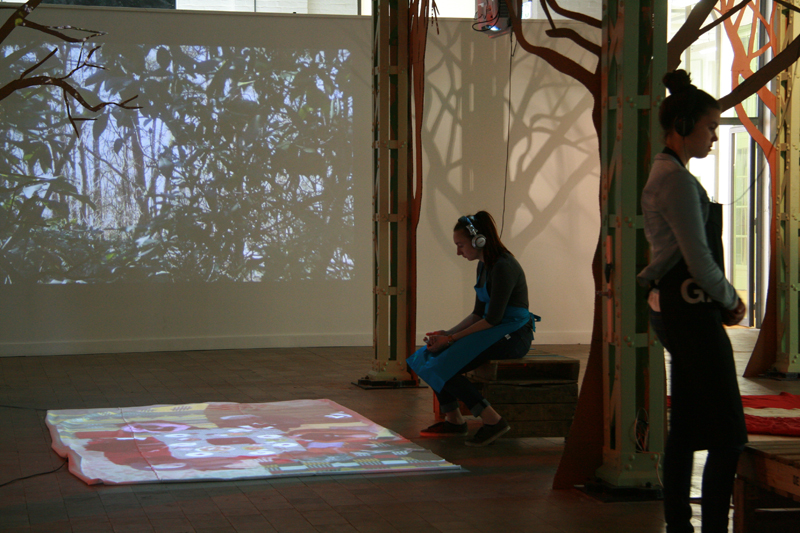
Deel twee van 'Het blote bos', een naturistenpicknick, gaat over wetten en regels, seks en naturisme, geluk en vrijheid, pearcings en tatoages. Duur van de film: 15 minuten.
'De Macht; kunstpolitiek in Den Bosch''. Deel 1. Duur: 15 minuten.
Een gesprek over wat cultuur inhoudt en betekent voor de stad, over topkunst en de basis, waarom kunst gekoesterd moet worden en wat deze betekent voor economische ontwikkelingen.
Genodigden waren: Inke Katoen (PvdA), Ben Wagemakers (CDA), Mike van der Geld (D66), Ralph Geers (VVD), Abe Renema (Groen Links), en Judith Hendrickx komt in deel 2 mee picknicken(Bossche Groenen).
Deel2. 'De Macht; kunstpolitiek in Den Bosch'. Duur: 15 minuten.
Een gesprek over wat cultuur inhoudt en betekent voor de stad, over subsidieslurpers, Drees, balansdenken, het nut van creativiteit en kunst als middel om de stad naar een volgende fase te helpen.
.
Lees hier het artikel in het Brabants Dagblad van 7 mei door Mark van der Voort.
Lees hier het artikel in de Bossche Omroep, verschenen op 3 mei, door Astrid Berkhout.
Bij themapicknick 'De fabrieken van Den Bosch' waren genodigd: Jan van der Putten (directeur Verkadefabriek), Simone Kramer (bestuurslid Tramkade/de Heus), Ivonne van der Velden (intendant Willem2Fabriek), Geert Snijders (voorzitter stichting Tramkade/de Heus), Cor van Hillo (architect van renovatie van de Willem2Fabriek), Maurice Horsten (directeur Bossche investerings maatschappij/Gruyter fabriek), Isidoor Wens (Melkfabriek/Artots/beeldend kunstenaar), Eric Alink (ex-kraker/journalist).
Deel 1. Duur: 15 min.
Niet Bosschenaar/architect Cor van Hillo kijkt op een objectieve manier naar industrieel erfgoed, terwijl ex-wethouder Geert Snijders herinneringen heeft aan zijn vader die werkte in de Willem2Fabriek en als bestuurder medeverantwoordelijk was voor de invulling van leegstaande fabrieken. Het industrieel erfgoed van Den Bosch wordt in dit deel belicht vanuit historisch-, persoonlijk-, politiek- en economisch perspectief.
De fabrieken van Den Bosch. Deel 2. Duur: 15 minuten.
Over de overschatte rol van de Bossche raad, politieke deals en koehandel, dat men vooral terug kijkt in Den Bosch en de oude industrie als ruimte voor vernieuwing.
'Kunst als eerste levensbehoefte. Deel 1'
Duur: 15 minuten.
Genodigden waren: Theo Danen (boer en noemt zichzelf ook vergaderboer), Leidi Haaijer (kunstenaar), Sophie Gruijters (transfarmers/stadslandbouwers), Albert Caron (Hermes businessnetwerk), Geurt Grosfeld (Ambassade voor creatieve zaken), Lesha Bosman (journalist). ). Over mensen die van eten hun werk hebben gemaakt, maar ook die te maken hebben met schaarste of juist overvloed. Over het verbouwen van voedsel in de stad of het platteland, over bio industrie, de wereld als atelier, problemen in de voedselketen en engagement.
'Kunst als eerste levensbehoefte. Deel 2'
Duur: 15 minuten.
Genodigden waren: Theo Danen (boer en noemt zichzelf ook vergaderboer), Leidi Haaijer (kunstenaar), Sophie Gruijters (transfarmers/stadslandbouwers), Albert Caron (Hermes businessnetwerk), Geurt Grosfeld (Ambassade voor creatieve zaken), Lesha Bosman (journalist). ).
Journalist Lesha Bosman ging met een leeg bord en zonder geld te voet op pad naar Den Haag om aandacht voor armoede te vragen. Kunstenaar Tineke Schuurmans liet 2 biggetjes logeren in een wijk in Tilburg alwaar ze werden vetgemest en opgegeten tijdens de buurtbarbecue. Wanneer wordt engagement kunst?
Onderstaande film van de opening (met medewerking van de Schermclub Den Bosch en dwarsfluittiste Evelien Clement) werd vertoond in de installatie.
Concept: Monique Broekman, camera/montage Ralf van de Wiel. Duur: 7:26
Een impressie van de opening gefotografeerd door Marc Bolsius:
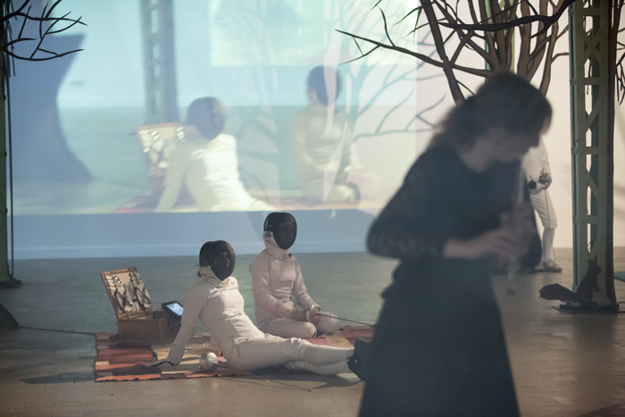
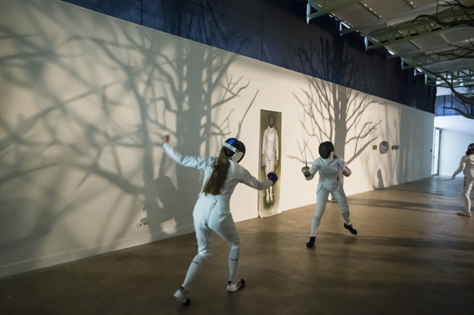 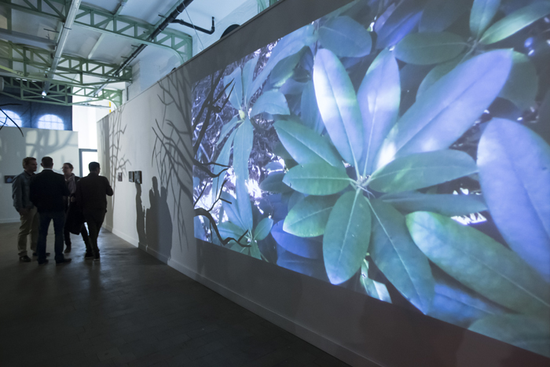
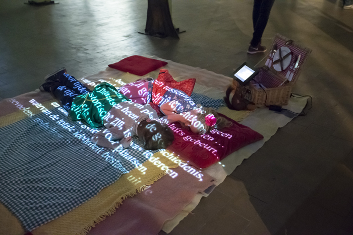 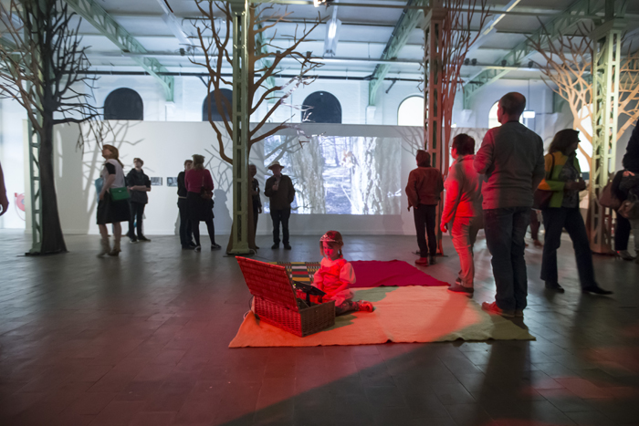
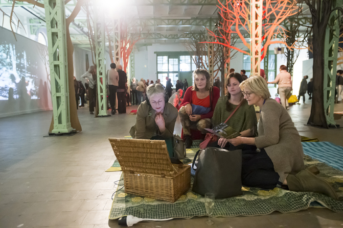 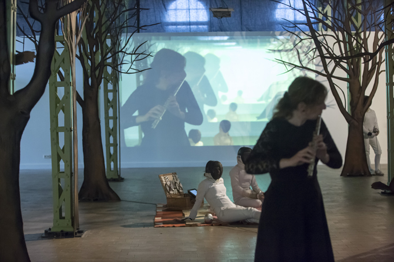
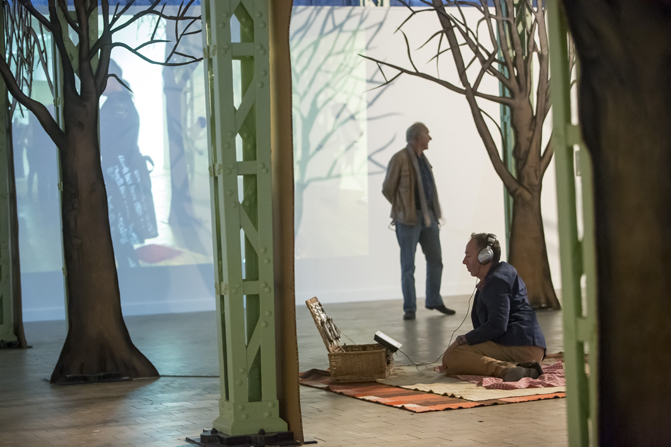 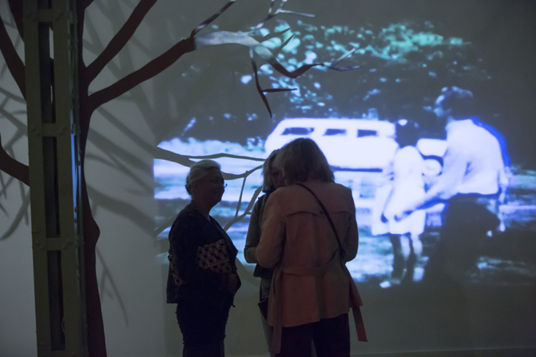
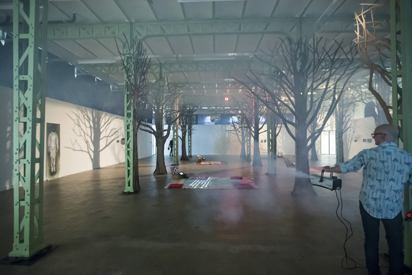 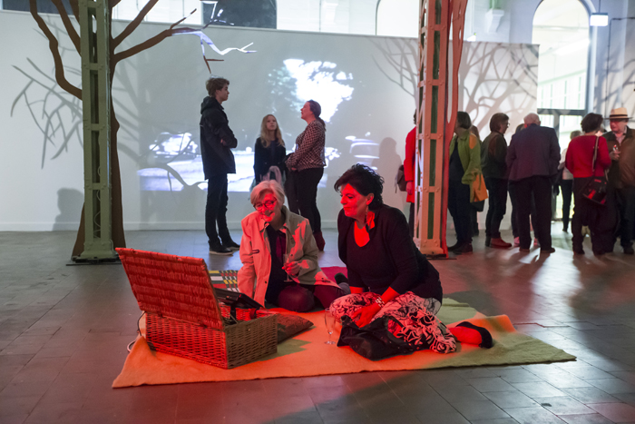
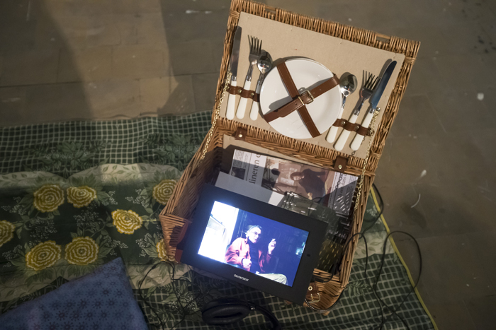 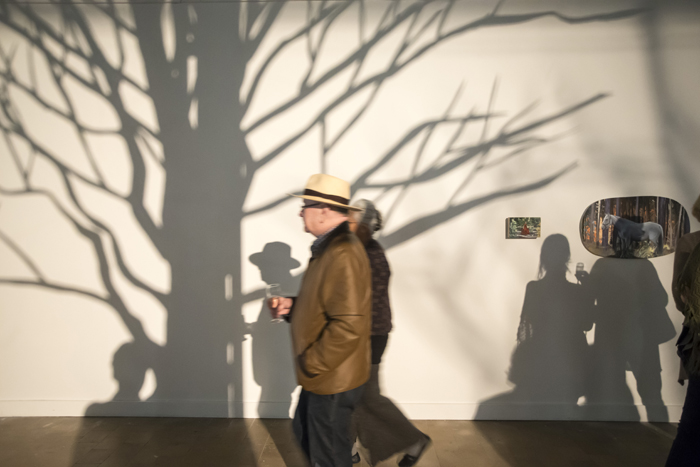
Korte inhoud project
In Tussentijd is de titel van het boek(-project) dat beeldend kunstenaar Monique Broekman heeft gerealiseerd i.s.m. kunsthistoricus Philip Peters. Het boek (uitgave van stichting Cultuurfonds ’s-Hertogenbosch en stichting Puckworks) vormt het uitgangspunt voor project 'Picknick in het bos / woud der verwachting' in de ruimte op de eerste verdieping van het kunstencluster Willem2. De titel van het project verwijst naar het schilderij van Manet Le déjeuner sur l'herbe en Het woud der verwachting; de bestseller van Hella Haasse dat zich afspeelt in de middeleeuwen, over macht, strijd, edelen, wetenschap, poëzie en ballingschap.
{kind=link}
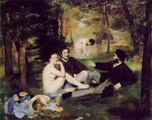 

Het boek In Tussentijd bevat 8 thema’s/hoofdstukken die het fundament vormen van de werkzaamheden van Monique Broekman als beeldend kunstenaar en die de bouwstenen zijn waarmee het concept rondom de installatie in het kunstencluster van de Willem 2 is opgebouwd.
(De verwevenheid van kunst en maatschappij, (Kunst-)politiek anno 2013/14, Kunst als eerste levensbehoefte, De functie van stilte, Het bos en de familie, Dochters en moeders, De Metaal/Industrie, Tussen tijd en plaats)
Hoofdstuk vijf van In Tussentijd: ‘Het bos en de familie’ wordt als decor/sfeerbeeld eruit gelicht waarin de ruimte van de W2 wordt getransformeerd. De pilaren van de W2 worden de bomen van het bos waarin verschillende interactieve gebeurtenissen en een performance zullen plaats vinden.
Het Woud Willem 2
Aan de pilaren in de ruimte op de eerste verdieping van de Willem2 worden kartonnen bomen bevestigd. Er is o.a. een projectie van een korte film die Monique Broekman heeft gemaakt in het kader van project In Tussentijd waarin zij terug keert naar het bos van haar jeugd, waarin heden en verleden door elkaar heen lopen.
Het project wordt 8 mei 20.00 uur geopend door een performance van schermers van de Schermclub Den Bosch, muzikaal omlijst door fluitist Evelien Clement.
Picknick in het bos
Uitgangspunt van ‘de picknick in het bos’ is hoofdstuk 3 van boek In Tussentijd:
‘Kunst als eerste levensbehoefte’. Gedurende het project worden 4 (besloten) picknicks georganiseerd waarbij verschillende mensen worden uitgenodigd gebaseerd op thema’s afkomstig uit het boek In Tussentijd. Van de picknicks worden filmopnames gemaakt - van bovenaf - die later geprojecteerd op het picknickkleed onderdeel zullen worden van de installatie. Monique Broekman leidt als gespreksleider het gesprek tijdens de picknick.
Themapicknicks/gespreksonderwerpen/genodigden:
1 (n.a.v. hoofdstuk 5 van In Tussentijd Het bos en de familie)*Het blote bos, op 16 mei.
Leden van de landelijke naturistenvereniging NFN worden uitgenodigd om naakt te recreëren in de tentoonstelling en komen picknicken, over natuurlijkheid en maakbaarheid van de natuur. Over Adam en Eva. Op zoek naar het aards paradijs..
2 (n.a.v. hoofdstuk 7 van In Tussentijd: De Metaal/industrie)*De fabrieken van Den Bosch, op 17 mei.
Over het verleden, heden, toekomst van de fabrieken van Den Bosch, over de transformatie van plekken, over maakbaarheid van kunstplekken. Er worden mensen uitgenodigd die te maken hebben met-, gewerkt hebben bij- of op dit moment werkzaam zijn bij de Gruyterfabriek, de Heus, Verkade, Melkfabriek, W2.
3 (n.a.v. hoofdstuk 2 van In Tussentijd) De Macht(Kunst-)politiek anno 2015, op 21 mei.
Er zijn gemeenteraadsverkiezingen geweest eind 2014. Wie zitten in de nieuwe gemeenteraad, wat is de nieuwe koers, is er een nieuwe koers? Genodigden uit de gemeentepolitiek vanuit alle partijen (de Groenen, CDA, PvdA, Groen Links etc.)
4(n.a.v. hoofdstuk 3 In Tussentijd)* Kunst als eerste levensbehoefte, Er worden bemiddelde mensen uitgenodigd en mensen die afhankelijk zijn van de voedselbank of er werken, mensen die van eten hun werk hebben gemaakt zoals: Hertogboeren, fooddesigners, stadslandbouwers/ transfarmers. Over kunst als voedsel, voedsel als inkomstenbron over armoede en overvloed, op 23 mei.
Willem2 als tussenruimte
De ruimte van de W2 wordt opgevat als heteropie; een neologisme (een taalelement dat nieuw is in een taal) van de Franse filosoof Michel Foucault. Hetero = anders, en topos = plaats. Een heteropie is een tussenruimte, een bemiddelingsruimte. In het boek In Tussentijd is de tussenruimte een fictieve ruimte in woorden waarin de kunst kan ontstaan, maar in de heteropie van Foucault wordt de concretisering van deze ruimte herkend. Een heteropie is een gebeuren in de tijd, het onderbreekt de continuïteit van de dagelijkse ruimte. Het weerspiegelt bestaande ruimte, het vergroot het of keert deze om, en bekritiseert deze. Het staat als nieuwe ruimte in verbinding met alle andere ruimten in de maatschappij. Een heteropie kan in de loop van de geschiedenis evolueren, van functie veranderen. Zoals ook het geval is bij de Willem 2; wat begon in 1897 als een sigarenfabriek, werd na leegstand gekraakt door kunstenaars, waarbinnen kunstenaarsinitiatief Artis ontstond, daarna het CBK en dan nu een kunstencluster waarin verschillende culturele instanties en kunstenaars een plek hebben.
Een heteropie is een ruimte waar verschillende ruimtes en tijdszones op 1 podium samenkomen; het breekt met de traditionele tijd. De heterotopie treedt pas volledig in werking als de persoon die binnentreedt een breuk ervaart met de traditionele tijd.
Dit project wordt ondersteund door de Willem2fabriek, Het Prins Bernhard Cultuurfonds, Fonds voor Cultuurparticipatie, de gemeente 's-Hertogenbosch, en Hermes businessnetwerk.


De workshops waar publiek aan kon deelnemen:
** 16 mei 14-17 uur
'ETEN UIT HET BOS'
Eetbare planten zoeken, proeven en bereiden
Door Geertje Jansen van Wandeloogst
Terwijl de mens denkt dat hij de natuur verovert, verovert de natuur de stad. In elke berm een paardenbloem, in elke moestuin een brandnetel. Beter dan ze verfoeien, kun je ze opeten.
Tijdens de workshop gaan we op zoek naar eetbare natuur in de stad. We gaan het oogsten zoals onze voorouders dat deden, met mand en mes. En we gaan dit wilde stadsvoedsel bereiden. We maken broodspread, kruidenboter, groene smoothie en wilde thee.
Dus, hop de stad in op zoek naar wilde groente. We laten het ons smaken tijdens de picknick in het bos.
We beginnen met een korte introductie daarna gaan we op wildplukwandeling in de stad. Terug bij de installatie in de Willem2fabriek gaan we het gevonden voedsel bereiden en we picknicken in het woud der verwachting.


**30 mei 'BOS IN DRUK'
I.s.m. het grafisch atelier materiaaldruk o.l.v. kunstenaar Roos Terra i.s.m. natuurgids Ferd Sauter van de IVN.
Je gaat wandelen o.l.v. de natuurgids in de buurt van Fort Isabella in Vught. (10 minuten fietsen vanaf de Willem2)
13.00 uur verzamelen bij de Kampdijklaan/brug Drongelens kanaal in Vught, (er kan geparkeerd worden) en gaan o.l.v. de natuurgids op zoek naar takken, planten en bloemen die later verwerkt worden in de materiaaldruk.
14.30 uur aanvang workshop materiaaldruk op groot formaat o.l.v. Roos Terra bij het grafisch atelier in de Willem 2. Je leert over diverse grafische technieken en gaat al gauw zelf aan de slag met de materiaaldruk techniek. Eerst experimenteer je met het drukken van de materialen die je uit het bos hebt meegenomen en zo werk je toe naar een eindwerk.
Er worden 4 proefdrukken gemaakt (39 x 53 cm) en 1 eindwerk (78 x 106 cm) Je gaat naar huis met een prachtige, zelfgemaakte prent van jouw bos in druk.
17.00 uur einde


 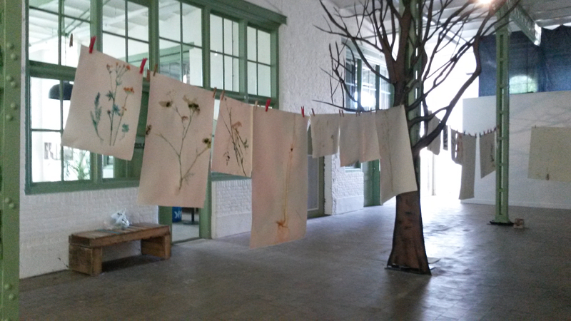
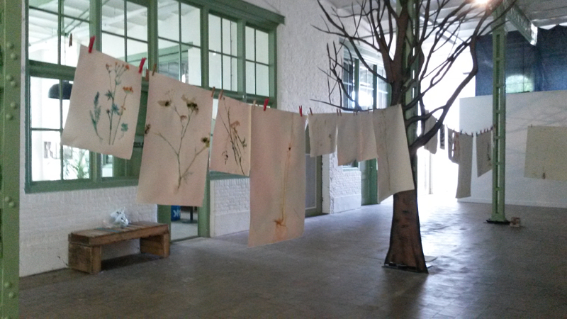
** 31 mei
'(NAAKT-)MODELTEKENEN' o.l.v. Monique Broekman
Het model poseert in de installatie in de Willem2fabriek.

**27 mei
SPROOKJESFILMS KIJKEN IN HET BOS (voor kinderen op de woensdagmiddag) met bosvruchtentaartjes en bosvruchtenlimonade.